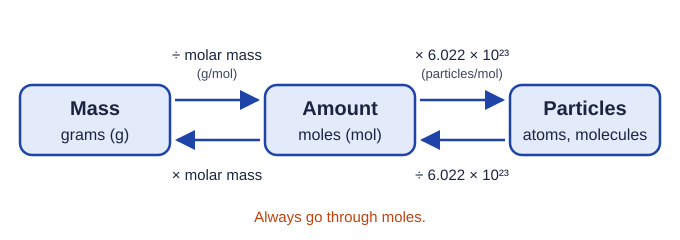

Moles and Molar Mass
Chemists count particles in moles of 6.022 × 10²³.
Part 1 · Hook
Why this matters
Part 2 · Before you start
What this builds on
Part 3 · Prerequisite check
Quick check before you start
1. Which setup changes 4.50 g into kilograms?
- 4.50 g × (1 kg / 1000 g)
- 4.50 g × (1000 g / 1 kg)
- 4.50 g × (1 kg / 100 g)
- 4.50 g ÷ (1 kg / 1000 g)
Show the answer
Put grams on the bottom so they cancel: 4.50 g × (1 kg / 1000 g) = 0.00450 kg.
- Correct: 4.50 g × (1 kg / 1000 g):
- 4.50 g × (1000 g / 1 kg):
- 4.50 g × (1 kg / 100 g):
- 4.50 g ÷ (1 kg / 1000 g):
2. What is (2.0 × 10³) × (3.0 × 10²⁰)?
- 6.0 × 10²³
- 6.0 × 10⁶⁰
- 5.0 × 10²³
- 6.0 × 10¹⁷
Show the answer
Multiply the coefficients (2.0 × 3.0 = 6.0) and add the exponents (3 + 20 = 23).
- Correct: 6.0 × 10²³:
- 6.0 × 10⁶⁰:
- 5.0 × 10²³:
- 6.0 × 10¹⁷:
3. How many significant figures does 0.0250 mol have?
- 3
- 4
- 2
- 5
Show the answer
Leading zeros do not count; the 2, the 5 and the trailing zero after the decimal point do.
- Correct: 3:
- 4:
- 2:
- 5:
Part 4 · See it
See it first

Part 5 · Step by step
How it works, step by step
- Atoms and molecules are far too small to count one by onechemists count them in groups of 6.022 × 10²³, called a mole
- The mole is defined so that the mass of one particle in amu matches the mass of a mole in gramsthe atomic mass on the periodic table is also the molar mass in g/mol
- A balance measures grams, and molar mass is grams per moledividing a mass by the molar mass gives the amount in moles
- Each mole holds Avogadro's number of particlesmultiplying moles by 6.022 × 10²³ gives the number of particles
Part 6 · Key ideas
Key ideas
- One mole is 6.022 × 10²³ particles (Avogadro's number). Always say which particles: one mole of water molecules holds three moles of atoms.
- Molar mass (g/mol) = the sum of the atomic masses of every atom in one particle. Water: 2(1.008) + 16.00 = 18.02 g/mol.
- grams ÷ molar mass = moles; moles × 6.022 × 10²³ = particles. Always go through moles.
- Equal masses of different substances hold different numbers of particles: lighter particles, more of them.
Part 7 · Misconception
A common mistake
The wrong idea: Equal masses of two substances contain equal numbers of molecules.
What actually happens: Molecules of different substances have different masses, so the same mass holds different numbers of them. 1.0 g of H₂ has about 16 times as many molecules as 1.0 g of O₂. Compare amounts in moles, not grams.
Part 8 · Check yourself
Check yourself
Exam-style questions. Anything you miss goes into your review queue.
1. What does one mole of a substance contain?
- One gram of the substance, whatever it is made of
- The number of atoms in one molecule of the substance
- 6.022 × 10²³ of the particles named, such as atoms or molecules
- Enough of the substance to fill a 1-liter container
Show the answer
One mole is Avogadro's number, 6.022 × 10²³, of whatever particles you name.
- One gram of the substance, whatever it is made of: A mole is a count, not a mass. One mole of different substances has different masses.
- The number of atoms in one molecule of the substance: That number is in the formula and is usually small, such as 3 for water.
- Correct: 6.022 × 10²³ of the particles named, such as atoms or molecules: Right: a mole is a counting unit, like a dozen, for 6.022 × 10²³ things.
- Enough of the substance to fill a 1-liter container: A mole is a count of particles, not a volume.
Data table
Five samples on a balance
A student weighs five pure samples and looks up each molar mass.
| Sample | Substance | Formula | Mass (g) | Molar mass (g/mol) |
|---|---|---|---|---|
| 1 | Aluminum foil | Al | 13.5 | 26.98 |
| 2 | Copper wire | Cu | 127 | 63.55 |
| 3 | Water | H₂O | 45.0 | 18.02 |
| 4 | Ethanol | C₂H₆O | 23.0 | 46.07 |
| 5 | Table sugar (sucrose) | C₁₂H₂₂O₁₁ | 85.6 | 342.30 |
2. How many moles of aluminum atoms are in Sample 1?
Type a number and its unit.
Show the answer
13.5 g × (1 mol / 26.98 g) = 0.5004 mol, which is 0.500 mol to the three significant figures of the mass.
- Answer: 0.500 mol
3. Which sample contains the greatest number of atoms in total?
- Sample 3, the water
- Sample 2, the copper
- Sample 4, the ethanol
- Sample 5, the sucrose
Show the answer
Moles of atoms = moles of particles × atoms per particle. Sucrose: 0.250 × 45 = 11.3 mol; water 2.50 × 3 = 7.49 mol; copper 2.00 mol; ethanol 4.49 mol; aluminum 0.500 mol.
- Sample 3, the water: Water has the most molecules (2.50 mol), but only 3 atoms each, so 7.49 mol of atoms.
- Sample 2, the copper: The largest mass, but copper atoms are heavy: 127 g ÷ 63.55 g/mol = 2.00 mol of atoms.
- Sample 4, the ethanol: 0.499 mol of molecules × 9 atoms each = 4.49 mol of atoms, less than sucrose or water.
- Correct: Sample 5, the sucrose: Right: 85.6 g ÷ 342.30 g/mol = 0.250 mol of molecules, and each molecule has 45 atoms, so 11.3 mol of atoms.
4. How many hydrogen atoms are in Sample 4?
Type a number in hydrogen atoms.
Show the answer
23.0 g ÷ 46.07 g/mol = 0.4992 mol of ethanol molecules. Each has 6 H atoms: 0.4992 × 6 = 2.995 mol of H atoms. × 6.022 × 10²³ = 1.80 × 10²⁴ H atoms.
- Answer: 1.80 × 1024 hydrogen atoms
5. What is the molar mass of calcium carbonate, CaCO₃? Use Ca 40.08, C 12.01, O 16.00.
Type a number and its unit.
Show the answer
Add the atomic masses of every atom in one formula: 40.08 + 12.01 + 3(16.00) = 100.09 g/mol.
- Answer: 100.09 g/mol
6. What is the mass of 0.0250 mol of glucose, C₆H₁₂O₆ (molar mass 180.16 g/mol)?
Type a number and its unit.
Show the answer
0.0250 mol × (180.16 g / 1 mol) = 4.504 g, which is 4.50 g to three significant figures.
- Answer: 4.50 g
7. One molecule of ethanol has a mass of 46.07 amu. What is the mass of one mole of ethanol molecules?
- 46.07 amu
- 46.07 × 6.022 × 10²³ g
- 46.07 ÷ 6.022 × 10²³ g
- 46.07 g
Show the answer
The number is the same at both scales: 46.07 amu per molecule and 46.07 g per mole. That is why the mole was defined as it was.
- 46.07 amu: That is the mass of one molecule, not of 6.022 × 10²³ of them.
- 46.07 × 6.022 × 10²³ g: This multiplies twice: the g/mol number already counts a whole mole.
- 46.07 ÷ 6.022 × 10²³ g: Dividing gives the mass of one molecule in grams, not of a mole.
- Correct: 46.07 g: Right: the mole is defined so that amu per particle equals grams per mole.
Part 9 · Summary
Summary
Part 10 · Up next
What comes next
Part 11 · Connections